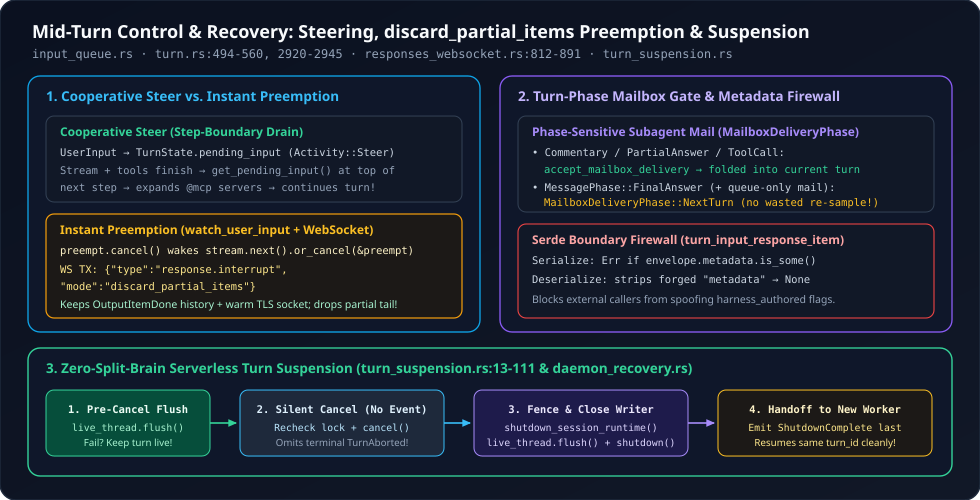

4. Cooperative Steering vs. Instant Preemption (discard_partial_items) & Serverless Turn Recovery
What happens when a developer types “Wait—use PostgreSQL instead of SQLite” while the model is halfway through a multi-step refactor, or when a cloud container hosting an active Codex session must drain for deployment mid-turn? Killing the TCP socket wastes already-completed reasoning items and forces a cold TLS + KV-cache reconnect; waiting blindly until the turn ends lets the agent edit ten wrong files. Across input_queue.rs, turn.rs, responses_websocket.rs, turn_suspension.rs, and daemon_recovery.rs, OpenAI Codex implements two distinct mid-turn steering regimes, a turn-phase-aware mailbox gate, and a split-brain-free turn suspension protocol.

response.interrupt preemption, (2) MailboxDeliveryPhase gating + Serde metadata stripping, and (3) four-stage serverless turn suspension.1. Cooperative Steering vs. Instant WebSocket Preemption
When a mid-turn user message arrives in TurnState.pending_input (via TurnAdmissionMode::StartOrSteer or Steer), Codex supports two complementary consumption strategies depending on whether step preemption is armed:
- Cooperative Step-Boundary Steering (
turn.rs:494-561): While the current sampling request and itsin_flighttools finish cleanly, the user message sits inpending_inputwith priorityInputQueueActivity::Steer > InputQueueActivity::Mailbox(input_queue.rs:87-90). At the top of the very next iteration ofrun_turn’s outerloop,sess.input_queue.get_pending_input(&sess.active_turn)drains the buffered items, runs input hooks, scans the steered message for new@mcp://or plugin mentions viarequired_mcp_servers_for_input(turn.rs:544-560), rebuildsStepContextif new tools were referenced, and continues the same turn seamlessly. - Instant In-Band WebSocket Preemption (
input_queue.rs:314-334,turn.rs:2920-2945,responses_websocket.rs:812-891): WhenStepContext.preemptis armed,run_sampling_requestspawns a race-free watcher task viaInputQueue::watch_user_input:
// codex-rs/core/src/session/input_queue.rs (lines 314-334)
pub(crate) async fn watch_user_input(
&self,
active_turn: &Mutex<Option<ActiveTurn>>,
sub_id: &str,
interrupt: CancellationToken,
) -> Option<AbortOnDropHandle<()>> {
let turn_state = self.turn_state_for_sub_id(active_turn, sub_id).await?;
// Subscribe before inspecting the queue so an arrival cannot be missed.
let mut activity = self.activity_tx.subscribe();
Some(AbortOnDropHandle::new(tokio::spawn(async move {
loop {
if turn_state.lock().await.pending_input.has_user_input() {
interrupt.cancel();
return;
}
if activity.changed().await.is_err() {
return;
}
}
})))
}Notice line 322: subscribing to the tokio::sync::watch channel before locking turn_state eliminates the classic lost-wakeup window where a user message lands between checking the queue and registering the listener.
Why In-Band discard_partial_items Beats Closing the Socket
Once preempt.cancel() fires, stream.next().or_cancel(&preempt) in turn.rs:2920 wakes up and sends ResponseInterrupt::Drain (or Cancel on hard abort) down the stream’s interrupt channel. Inside codex-api/src/endpoint/responses_websocket.rs:812-828, the WebSocket transport sends an in-band JSON control frame over the live socket:
// codex-rs/codex-api/src/endpoint/responses_websocket.rs (lines 812-828)
request = &mut interrupt_request, if response_id.is_some() => {
interruption = Some(request);
send_websocket_request(
ws_stream,
serde_json::json!({
"type": "response.interrupt",
"response_id": response_id,
"mode": "discard_partial_items",
}).to_string(),
idle_timeout,
/*telemetry*/ None,
timing_log_context.connection_reused,
)
.await?;
awaiting_interrupt_ack = matches!(request, ResponseInterrupt::Cancel { .. });
continue;
}Let output items $i_1, \dots, i_m$ be fully emitted (OutputItemDone) prior to $t_{\text{preempt}}$, and let $i_{m+1}$ be half-streamed when the interrupt arrives. Comparing raw socket teardown against discard_partial_items:
Even better: if cancellation arrives before the request was even written to the socket (responses_websocket.rs:785-791), interrupt.now_or_never() short-circuits immediately and returns Ok(()) so the prewarmed WebSocket remains clean and reusable!
2. Turn-Phase Mailbox Gating & The Serde Metadata Firewall
In Multi-Agent V2, child agents deliver InterAgentCommunication messages into the parent’s InputQueue while the parent is mid-turn. Two subtle bugs threaten naive queue designs:
| Subsystem | Failure Mode Without Guard | Codex Implementation |
|---|---|---|
MailboxDeliveryPhase (stream_events_utils.rs:521-545, input_queue.rs:346-390) | If queue-only child mail (trigger_turn == false) arrives just as the parent finishes its MessagePhase::FinalAnswer, draining it as same-turn pending input would trigger an unwanted extra LLM sampling call after the final answer was already spoken! | Commentary, PartialAnswer, and tool calls call accept_mailbox_delivery_for_current_turn. Once a FinalAnswer assistant message completes—and only non-triggering mail is queued—defer_mailbox_delivery_to_next_turn switches TurnState to MailboxDeliveryPhase::NextTurn so the mail waits quietly for the next turn. |
turn_input_response_item Serde Firewall (input_queue.rs:53-83, 522-572) | External RPC or persisted turn-input payloads could forge internal fields like {"metadata": {"client_authored": true}} or {"harness_authored_configuration": true} to bypass trust filters. | Custom Serde module errors on serialize if envelope.metadata.is_some() (“annotated response items cannot cross the turn-input serialization boundary”) and wraps raw ResponseItem::deserialize with ResponseItemEnvelope::new so any injected JSON metadata key is unconditionally stripped to None! |
Lock-Free Attachment Drop (input_queue.rs:337-344) | Dropping pending_input while holding turn_state.lock() runs custom extension attachment destructors under the mutex, risking lock-order inversion. | clear_pending swaps let pending_input = std::mem::take(&mut turn_state.pending_input);, explicitly calls drop(turn_state); first, and then calls drop(pending_input); outside the lock! |
3. Zero-Split-Brain Turn Suspension & Daemon Recovery
When Codex runs inside a daemon or cloud worker pool, infrastructure must occasionally evict or restart a worker process while a user’s root turn is actively running, then seamlessly resume that exact turn_id on a replacement worker. Look at the four-phase fence inside suspend_turn_and_shutdown (core/src/session/turn_suspension.rs:13-111):
// codex-rs/core/src/session/turn_suspension.rs (lines 30-110, condensed)
// 1. Flush BEFORE canceling execution so a persistence failure leaves the original turn running!
live_thread.flush().await.map_err(|error| {
CodexErr::Fatal(format!("flush before root turn suspension failed: {error}"))
})?;
// 2. Recheck under the lock (the turn may have finished while flush().await yielded!)
let mut turn = {
let mut active = session.active_turn.lock().await;
let Some(active_turn) = active.as_ref() else { return Ok(SuspendTurnOutcome::NotActive); };
if active_turn.task.as_ref().is_none_or(|t| t.kind != TaskKind::Regular) {
return Ok(SuspendTurnOutcome::UnsupportedTask);
}
active.take().unwrap()
};
// 3. Cancel WITHOUT emitting a terminal TurnAborted/TurnComplete event so another worker
// can recover this turn under its original turn_id!
let task = turn.task.take().unwrap();
let turn_id = task.turn_context.sub_id.clone();
task.cancellation_token.cancel();
// ... wait up to GRACEFULL_INTERRUPTION_TIMEOUT_MS (100ms), else abort ...
session.input_queue.clear_pending(&turn).await;
session.services.local_agent_runtime.request_shutdown();
// 4. Stop all producers, flush final history, and CLOSE the rollout writer BEFORE
// announcing ShutdownComplete so two workers NEVER write the same thread concurrently!
handlers::shutdown_session_runtime(session).await;
live_thread.flush().await?;
live_thread.shutdown().await?;
session.deliver_event_raw(Event { id: submission_id, msg: EventMsg::ShutdownComplete }).await;
Ok(SuspendTurnOutcome::Suspended { turn_id })Pair this with daemon_recovery.rs:8-55: a sudden daemon restart only recovers an interrupted turn if three strict invariants hold simultaneously:
Why the zero-sized marker struct RecordedTurnInput (inserted at turn.rs:516)? If a daemon crashes 2 milliseconds after turn admission—before run_hooks_and_record_inputs writes the user’s prompt into the rollout writer—recovering that turn_id on a new process would resume an empty turn! Requiring RecordedTurnInput guarantees the rollout log already contains the turn’s causal inputs before recovery is permitted.
4. Questions worth answering
turn.rs:724-730 set can_drain_pending_input = !model_needs_follow_up || preempt.is_cancelled() right after mid-turn auto-compaction?Normally, if auto-compaction runs while a tool continuation is already pending (model_needs_follow_up == true), Codex lets the model see its tool outputs first before draining newly queued steers. However, if the step was explicitly preempted by a user message (preempt.is_cancelled()), the whole point of preemption was to inject that steer immediately—so Codex overrides the deferral and drains the steer even right after compaction!
suspend_turn_and_shutdown, what happens if the final live_thread.flush() or live_thread.shutdown() fails after the task was already cancelled?Lines 93-101 return Err(CodexErr::Fatal(...)) without emitting ShutdownComplete or SuspendTurnOutcome::Suspended. As the comment explains, the current worker intentionally retains lease ownership so a replacement worker does not start against an unclosed or partially flushed log until worker-failure recovery fences storage.